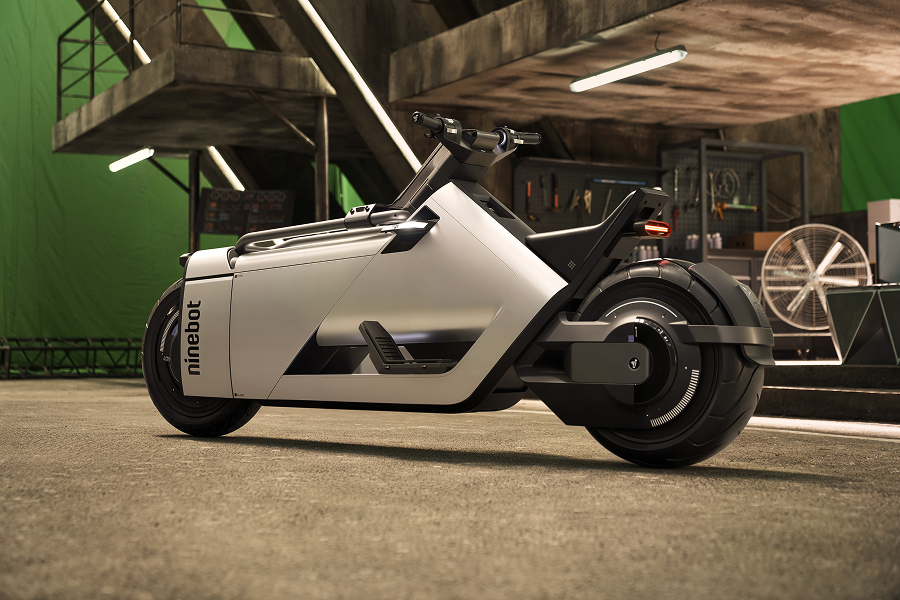
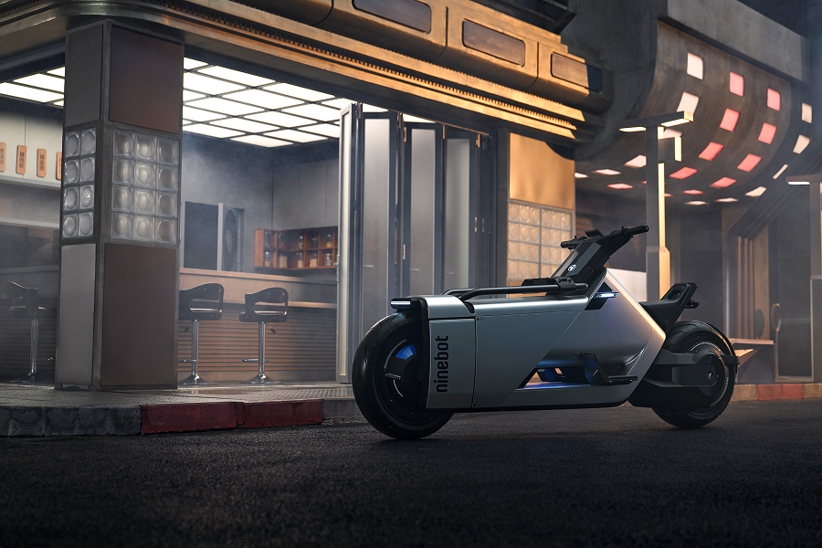

Modular transit cell within a city-scale autonomous network — interior reconfigures by passenger density in real time.


Signal overlays and lattice telemetry rendered as a continuous HUD layer across the modular chassis.
Thesis archive — autonomous grid integration, magnetic rail docking, and passenger flow algorithms.